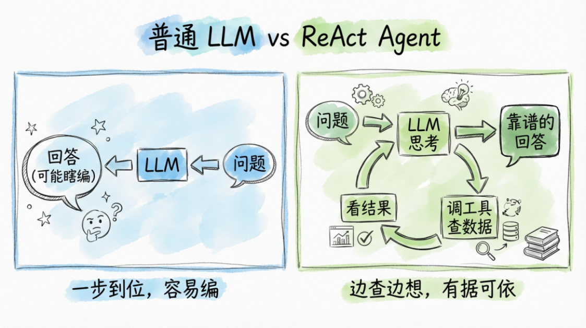
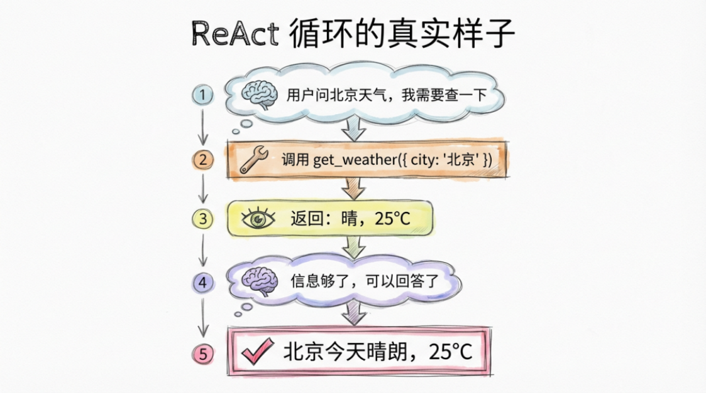
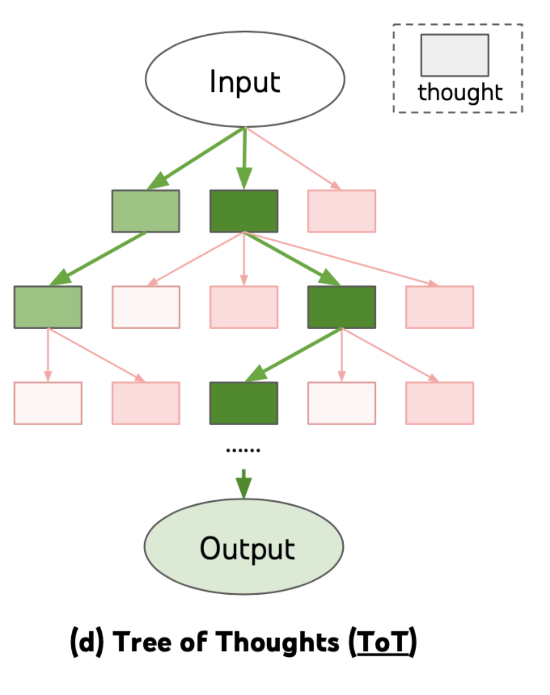

Agent 推理模式
在 AI Agent 系统中，大语言模型不仅需要理解用户输入，还需要决定如何一步一步完成任务。对于简 单问题，模型可以直接生成答案，但在复杂任务中，往往需要多步推理、多次工具调用以及不断修正 策略。因此，Agent 系统通常会设计特定的 推理模式（Reasoning Pattern），以指导模型如何思考 和执行任务。
所谓 Agent 推理模式，本质上是一种 任务分解与决策策略。它规定了模型在面对复杂问题时应该如何 思考、如何规划步骤以及如何利用工具。不同的推理模式适用于不同类型的任务，例如有的模式更适 合工具调用，有的模式更适合复杂问题求解。
目前在 Agent 研究和工程实践中，比较常见的推理模式包括 ReAct、Plan-and-Execute、 Reflection 和 Tree-of-Thought。这些模式从不同角度提升了 Agent 的推理能力，使其能够处理更加 复杂的任务。
ReAct
- ReAct（Reasoning + Acting） 是目前最常见的 Agent 推理模式之一，其核心思想是让模型在推理 （Reasoning）与行动（Acting）之间不断循环，从而逐步解决问题。

- 在 ReAct 模式中，模型会按照以下循环进行工作：
-
思考当前任务（Reasoning）
-
决定下一步行动（Action）
-
调用工具并获取结果（Observation）
-
根据结果继续推理
这种模式形成了一个 “思考—行动—观察” 的循环结构，使模型能够逐步接近最终答案。

例如，当用户提出问题“某个城市今天的天气如何”时，Agent 的推理过程可能如下：
• 思考：需要查询天气数据
-
行动：调用天气 API
-
观察：获取天气信息
-
思考：根据数据生成回答
ReAct 模式的优势在于结构简单、可解释性强，并且非常适合需要多次工具调用的任务。因此，许多 Agent 框架默认采用 ReAct 作为基本推理策略。
Plan-and-Execute
Plan-and-Execute（规划与执行） 是另一种常见的 Agent 推理模式，其核心思想是先制定完整计 划，再逐步执行任务。
在这种模式下，Agent 的工作流程通常分为两个阶段： 第一阶段是 规划阶段（Planning）。模型会先分析任务目标，并生成一个完整的执行计划。例如： 任务：生成市场分析报告 可能的计划：
- 搜索行业数据
2. 分析市场趋势
3. 总结竞争情况
- 生成报告
第二阶段是 执行阶段（Execution）。系统会按照计划逐步执行每一个步骤，并在每一步调用相应的 工具。
相比 ReAct 模式，Plan-and-Execute 的特点是 先整体规划，再逐步执行。这种方式在复杂任务中更加 稳定，因为模型不会在每一步都重新思考整个问题，而是按照既定计划推进任务。 这种模式通常适用于 多步骤复杂任务，例如数据分析、研究报告生成、自动化工作流等场景。
Reflection
Reflection（反思机制） 是一种用于提升 Agent 推理质量的策略。其核心思想是让模型在完成任务之 后进行自我检查，并根据检查结果修正答案或重新执行任务。 在传统推理过程中，模型一旦生成答案就直接输出，这很容易产生错误。而 Reflection 机制会增加一 个 自我评估步骤，让模型重新审视自己的推理过程。
一个典型的 Reflection 流程通常包括以下步骤：
-
模型生成初始答案
-
模型评估答案是否存在错误
-
如果发现问题，则重新推理或修改答案
-
输出最终结果
例如，在代码生成或数学推理任务中，Reflection 机制可以显著减少错误率，因为模型会在输出之前 进行自我校验。
在实际 Agent 系统中，Reflection 还可以用于：
-
检查工具调用是否正确
-
评估推理步骤是否合理
-
修正任务执行策略
通过这种方式，Agent 可以逐渐提高任务完成的准确率。
Tree-of-Thought
Tree-of-Thought（思维树） 是一种更高级的推理策略，其核心思想是让模型同时探索多个推理路 径，并选择最优结果。

在普通推理过程中，模型通常只生成一条思考路径，如果这条路径错误，就很难得到正确答案。而 Tree-of-Thought 则会让模型在每一步生成多个可能的思路，并形成一棵推理树。 例如，在解决复杂问题时，模型可能生成三种不同的思路：
-
思路 A
-
思路 B
• 思路 C
然后系统会评估这些思路的合理性，并选择最优路径继续推理。这个过程可以不断重复，直到找到最 佳解决方案。
Tree-of-Thought 的优势在于 能够探索更多可能的解决方案，从而提高复杂任务的成功率。它特别适 用于以下场景：
-
数学推理
-
复杂规划问题
-
• 多步骤决策任务
-
• 高难度逻辑问题
不过，这种方法通常需要更多计算资源，因为模型需要生成并评估多条推理路径。 下面是一篇关于“Agent 快慢思考”的文章，结合心理学、认知科学和人工智能领域的观点写成：
Agent 的快慢思考
在人工智能研究和认知科学中，“快慢思考”理论揭示了决策过程的两种截然不同的模式：快速直觉 的反应（System 1）和缓慢理性的推理（System 2）。当这一概念应用到智能 Agent 的设计上时，我 们可以观察到 Agent 在执行任务时同样面临“快思考”和“慢思考”的权衡问题。 快思考：即时响应与效率优先
-
快思考模式下，Agent 依赖于预训练知识、规则库或轻量化模型进行即时决策。其特点是： • 低延迟：响应速度快，适用于实时交互场景，如智能客服、语音助手或交易监控系统。
-
• 经验驱动：依赖历史数据和模式匹配，能够在大多数常规场景下快速给出合理答案。
-
• 资源节约：减少计算消耗，降低推理成本，尤其适合边缘设备或大规模并发任务。
然而，快思考也存在局限性：它可能受到数据偏差或噪声影响，面对未见过的复杂场景容易产生错误 判断。在面对高风险或策略性决策时，仅依赖快思考的 Agent 可能会出现“直觉陷阱”。 慢思考：深度推理与策略优化
慢思考模式则强调系统性分析和多步骤推理。Agent 在此模式下会：
-
进行多轮推理：通过内部模型或模拟环境，评估多种可能性，选择最优方案。
-
• 利用上下文和外部工具：结合知识图谱、检索系统或专家系统进行辅助推理。
-
• 提升准确性：在复杂任务和未见场景中，慢思考可以显著降低错误率，提高决策质量。
-
慢思考的主要缺点是计算成本高、响应延迟长，不适合需要即时响应的场景。因此，单独依赖慢思考 的 Agent 可能在实际应用中显得“笨拙”或效率低下。
现代 Agent 系统通常采用快慢思考协同机制，将两者的优势结合：
-
初步筛选 + 深度验证：快思考用于快速生成候选决策，慢思考对候选进行验证和优化。
-
风险感知触发机制：在普通场景下依赖快思考，遇到高风险或异常输入时触发慢思考策略。
-
分层推理架构：将任务拆解为多个子任务，简单子任务使用快思考，复杂或依赖上下文的子任务使 用慢思考。
这种设计在多领域实践中都得到验证。例如，自动写代码 Agent 会先通过模板匹配和代码片段生成快 速输出，然后再通过静态分析或逻辑验证进行慢速检查，既保证了响应速度，又减少了潜在错误；智 能客服 Agent 通过快思考回答常规问题，而在复杂纠纷或多轮对话中启用慢思考策略，以保证服务质 量和用户体验。
推理模式在 Agent 系统中的意义
通过以上几种推理模式可以看出，Agent 系统的核心能力不仅来自大语言模型本身，还来自于 如何组 织模型的推理过程。不同的推理策略会直接影响 Agent 的性能、稳定性以及任务完成质量。
在实际工程中，很多系统会结合多种推理模式。例如：
-
使用 ReAct 进行工具调用
-
使用 Plan-and-Execute 处理复杂任务
-
使用 Reflection 进行结果校验
通过这种方式，可以构建更加稳定和智能的 Agent 系统。
随着大模型技术的不断发展，Agent 的推理模式也在持续演进。未来的 Agent 系统可能会具备更强的 规划能力、自我学习能力以及长期记忆能力，从而在更多真实业务场景中发挥作用。